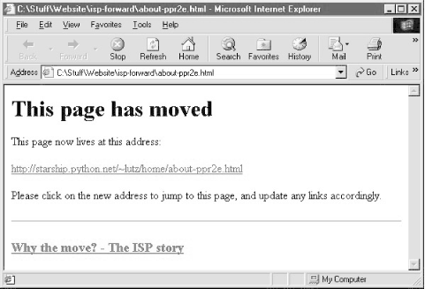

| I l@ve RuBoard |
|
4.3 Generating Forward-Link Web PagesMoving is rarely painless, even in the brave new world of cyberspace. Changing your web site's Internet address can lead to all sorts of confusion -- you need to ask known contacts to use the new address, and hope that others will eventually stumble onto it themselves. But if you rely on the Internet, moves are bound to generate at least as much confusion as an address change in the real world. Unfortunately, such site relocations are often unavoidable. Both ISPs (Internet Service Providers) and server machines come and go over the years. Moreover, some ISPs let their service fall to intolerable levels; if you are unlucky enough to have signed up with such an ISP, there is not much recourse but to change providers, and that often implies a change of web addresses.[3]
Imagine, though, that you are an O'Reilly author, and have published your web site's address in multiple books sold widely all over the world. What to do, when your ISP's service level requires a site change? Notifying the tens or hundreds of thousands of readers out there isn't exactly a practical solution. Probably the best you can do is to leave forwarding instructions at the old site, for some reasonably long period of time -- the virtual equivalent of a "We've Moved" sign in a storefront window. On the Web, such a sign can also send visitors to the new site automatically: simply leave a page at the old site containing a hyperlink to the page's address at the new site. With such forward-link files in place, visitors to the old addresses will be only one click away from reaching the new ones. That sounds simple enough. But because visitors might try to directly access the address of any file at your old site, you generally need to leave one forward-link file for every old file -- HTML pages, images, and so on. If you happen to enjoy doing lots of mindless typing, you could create each forward-link file by hand. But given that my home site contains 140 files today, the prospect of running one editor session per file was more than enough motivation for an automated solution. 4.3.1 Page Template FileHere's what I came up with. First of all, I create a general page template text file, shown in Example 4-3, to describe how all the forward-link files should look, with parts to be filled in later. Example 4-3. PP2E\System\Filetools\template.html<HTML><BODY> <H1>This page has moved</H1> <P>This page now lives at this address: <P><A HREF="http://$server$/$home$/$file$"> http://$server$/$home$/$file$</A> <P>Please click on the new address to jump to this page, and update any links accordingly. </P> <HR> <H3><A HREF="ispmove.html">Why the move? - The ISP story</A></H3> </BODY></HTML> To fully understand this template, you have to know something about HTML -- a web page description language that we'll explore in Chapter 12. But for the purposes of this example, you can ignore most of this file and focus on just the parts surrounded by dollar signs: the strings $server$, $home$, and $file$ are targets to be replaced with real values by global text substitutions. They represent items that vary per site relocation and file. 4.3.2 Page Generator ScriptNow, given a page template file, the Python script in Example 4-4 generates all the required forward-link files automatically. Example 4-4. PP2E\System\Filetools\site-forward.py#######################################################
# Create forward link pages for relocating a web site.
# Generates one page for every existing site file;
# upload the generated files to your old web site.
# Performance note: the first 2 string.replace calls
# could be moved out of the for loop, but this runs
# in < 1 second on my Win98 machine for 150 site files.
# Lib note: the os.listdir call can be replaced with:
# sitefiles = glob.glob(sitefilesdir + os.sep + '*')
# but then the file/directory names must be split
# with: dirname, filename = os.path.split(sitefile);
#######################################################
import os, string
servername = 'starship.python.net' # where site is relocating to
homedir = '~lutz/home' # where site will be rooted
sitefilesdir = 'public_html' # where site files live locally
uploaddir = 'isp-forward' # where to store forward files
templatename = 'template.html' # template for generated pages
try:
os.mkdir(uploaddir) # make upload dir if needed
except OSError: pass
template = open(templatename).read( ) # load or import template text
sitefiles = os.listdir(sitefilesdir) # filenames, no directory prefix
count = 0
for filename in sitefiles:
fwdname = os.path.join(uploaddir, filename) # or + os.sep + filename
print 'creating', filename, 'as', fwdname
filetext = string.replace(template, '$server$', servername) # insert text
filetext = string.replace(filetext, '$home$', homedir) # and write
filetext = string.replace(filetext, '$file$', filename) # file varies
open(fwdname, 'w').write(filetext)
count = count + 1
print 'Last file =>\n', filetext
print 'Done:', count, 'forward files created.'
Notice that the template's text is loaded by reading a file ; it would work just as well to code it as an imported Python string variable (e.g., a triple-quoted string in a module file). Also observe that all configuration options are assignments at the top of the script, not command-line arguments; since they change so seldom, it's convenient to type them just once in the script itself. But the main thing worth noticing here is that this script doesn't care what the template file looks like at all; it simply performs global substitutions blindly in its text, with a different filename value for each generated file. In fact, we can change the template file any way we like, without having to touch the script. Such a division of labor can be used in all sorts of contexts -- generating "makefiles," form-letters, and so on. In terms of library tools, the generator script simply:
The end result is a mirror-image of the original web site directory, containing only forward-link files generated from the page template. As an added bonus, the generator script can be run on just about any Python platform -- I can run it on both my Windows laptop (where my web site files are maintained), as well as a Unix server where I keep a copy of my site. Here it is in action on Windows: C:\Stuff\Website>python %X%\System\Filetools\site-forward.py creating about-hopl.html as isp-forward\about-hopl.html creating about-lp-toc.html as isp-forward\about-lp-toc.html creating about-lp.html as isp-forward\about-lp.html creating about-pp-japan.html as isp-forward\about-pp-japan.html ... ...more lines deleted... ... creating whatsold.html as isp-forward\whatsold.html creating xlate-lp.html as isp-forward\xlate-lp.html creating about-pp2e.html as isp-forward\about-pp2e.html creating about-ppr2e.html as isp-forward\about-ppr2e.html Last file => <HTML><BODY> <H1>This page has moved</H1> <P>This page now lives at this address: <P><A HREF="http://starship.python.net/~lutz/home/about-ppr2e.html"> http://starship.python.net/~lutz/home/about-ppr2e.html</A> <P>Please click on the new address to jump to this page, and update any links accordingly. </P> <HR> <H3><A HREF="ispmove.html">Why the move? - The ISP story</A></H3> </BODY></HTML> Done: 137 forward files created. To verify this script's output, double-click on any of the output files to see what they look like in a web browser (or run a start command in a DOS console on Windows, e.g., start isp-forward\about-ppr2e.html). Figure 4-1 shows what one generated page looks like on my machine. Figure 4-1. Site-forward output file pageTo complete the process, you still need to install the forward links: upload all the generated files in the output directory to your old site's web directory. If that's too much to do by hand too, be sure to also see the FTP site upload scripts in Chapter 11, for an automatic way to do it with Python (PP2E\Internet\Ftp\uploadflat.py will do the job). Once you've caught the scripting bug, you'll be amazed at how much manual labor Python can automate. |
| I l@ve RuBoard |
|